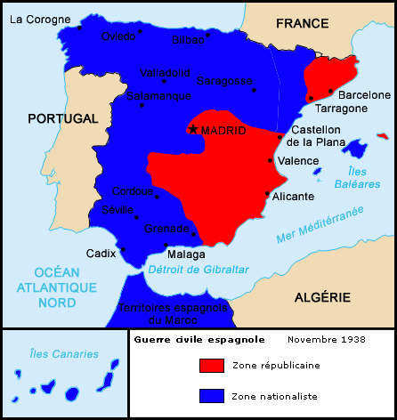

Realisé dans le cadre du cours de 4TTi-WEB
Laila Samhi Sokolova
L'Espagne est un État national dont le nom officiel est le Royaume d'Espagne situé au sud de l'Europe occidentale et au nord de l'Afrique. Elle est limitrophe à l'ouest avec le Portugal, au nord-est avec la France et au sud avec le Maroc. Elle est composée de 17 communautés autonomes et de deux villes autonomes et est membre à part entière des Nations Unies (ONU) et de l'Union européenne.
Sa forme d'organisation est la monarchie parlementaire sous une forme de gouvernement démocratique et sa capitale est la ville de Madrid. Ses coutumes, son histoire et sa géographie font de l’Espagne l’un des pays les plus visités au monde et l’une des principales économies mondiales. Ce fut l'un des grands empires territoriaux entre le XVe et le XVIIIe siècle, c'est pourquoi sa culture, sa langue et bon nombre de ses coutumes se retrouvent dans une grande partie des pays du continent américain et dans certains pays d'Afrique. L'Espagne a une superficie de 505 990 km² et est le quatrième plus grand pays du continent européen (derrière la Russie, l'Ukraine et la France). En Afrique, le territoire de l'Espagne s'étend à travers les villes de Ceuta et Melilla et les îles Canaries, Chafarinas, Alhucemas, l'île d'Alborán et le rocher de Vélez de la Gomera.
